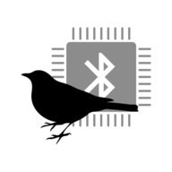

<mat-toolbar
    [class.mat-elevation-z3]="isScrolled"
    class="d-flex px-sm-3 px-2"
    color="primary"
>
    

    <div
        class="flex-grow-0 mr-2 mr-sm-3 d-sm-block"
        [class.d-none]="bluetooth.isDeviceConnected"
        appEllipsisTooltip
    >
        {{ 'general.appTitle' | translate }}
    </div>

    <div
        class="flex-grow-1 device-name mr-1 text-right"
        *ngIf="bluetooth.isDeviceConnected"
        appEllipsisTooltip
    >
        {{ bluetooth.deviceName }}
    </div>

    <div
        class="app-header-icon-buttons d-flex justify-content-end"
        [ngClass]="bluetooth.isDeviceConnected ? 'flex-grow-0' : 'flex-grow-1'"
    >
        <ng-container *ngIf="bluetooth.currentBluetoothState as state">
            <button
                mat-icon-button
                class="mx-1 mx-sm-2 my-2"
                [disabled]="!bluetooth.isSupported || bluetooth.isConnecting"
                (click)="bluetooth.onBluetoothPressed()"
                [matTooltip]="'bluetooth.stateShort.' + state | translate"
            >
                <mat-icon> {{ state }} </mat-icon>
            </button>
        </ng-container>
        <button
            mat-icon-button
            class="mx-1 mx-sm-2 my-2"
            (click)="onLanguagesClicked()"
            [matTooltip]="'general.changeLanguage' | translate"
        >
            <mat-icon> language </mat-icon>
        </button>
        <button
            mat-icon-button
            class="mx-1 mx-sm-2 my-2"
            (click)="theming.toggleLightDarkMode()"
            [matTooltip]="
                (theming.isDarkTheme
                    ? 'general.switchToEarlyBird'
                    : 'general.switchToNighthawk'
                ) | translate
            "
        >
            <mat-icon>
                {{ theming.isDarkTheme ? 'light_mode' : 'dark_mode' }}
            </mat-icon>
        </button>
        <button
            mat-icon-button
            class="mx-1 mx-sm-2 my-2"
            (click)="onInfoClicked()"
            [matTooltip]="'general.showInfos' | translate"
        >
            <mat-icon> info_outline </mat-icon>
        </button>
    </div>
</mat-toolbar>
